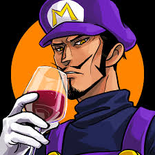

Quem sou eu?
A pós morrer duas vezes e ressuscitar em mesmo número, Mordekaiser é um cruel comandante de uma época perdida.
Ele usa a arte da necromancia para aprisionar almas e torná-las submissas pela eternidade.
Hoje em dia, poucos se lembram das primeiras conquistas ou conhecem a real dimensão do poder de Mordekaiser.
Porém, algumas almas ancestrais ainda se lembram, e temem que um dia ele volte para reivindicar seu domínio...
tanto sobre os mortos quanto sobre os vivos.